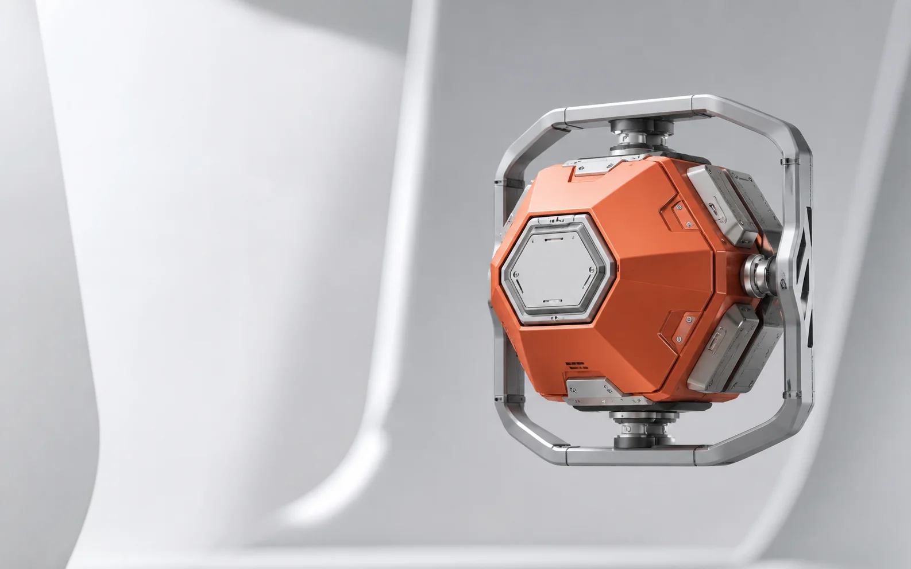

Launch ControlPre-launch QA for Meta Ads
Detect / Route / Prove
Catch creative launch mistakes before Ads Manager.
Validate every creative row. Route exceptions to the right owner. Keep ambiguous decisions human.

QueueReviewReceipt
10 creatives need a decision
cr_007Possible duplicateCreative Ops Manager
cr_017Possible duplicateCreative Ops Manager
cr_027Possible duplicateCreative Ops Manager